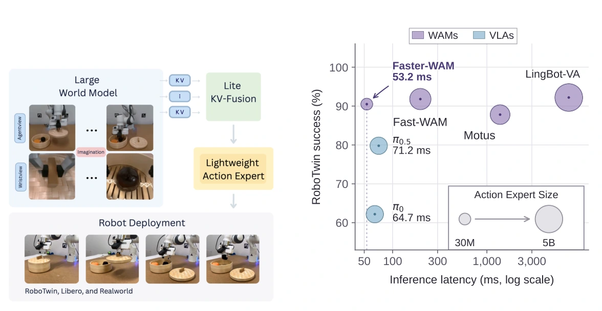

Faster-WAM
Do World Action Models Need Deep Action Modules?
A world-model-centric robot policy that connects a single-layer action expert to a pretrained video backbone, reducing action-specific computation while retaining control performance.

Approach
Dock of Transformers and Lite KV-Fusion give a shallow action expert access to video-model representations. World-model-only conditioning and retracted 1D-RoPE align the action and video branches.
Reported results
98.3% success on LIBERO and 78.3% on LIBERO-Plus, with a 3.7–3.8× speedup over Fast-WAM in matched comparisons. Physical tests report 81.3% mean success, compared with 80.0% for Fast-WAM.
Scope
Evaluations cover two video backbones and four physical tasks on one platform. A single action layer is not established as universally optimal.